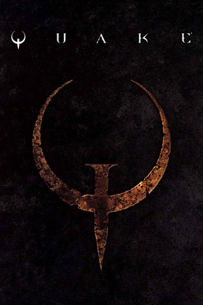
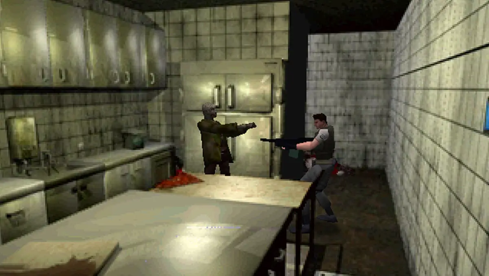

Pong (1972) -Primul joc comercial de succes, creat de Atari
.jpg)
Anii 1990 au fost un deceniu de inovații marcante în jocurile video. A fost un deceniu de tranziție de la grafica raster la grafica 3D și a dat naștere mai multor genuri de jocuri video, inclusiv shooter la prima persoană, strategie în timp real și MMO. Jocurile portabile devin mai populare de-a lungul deceniului, parțial datorită lansării Game Boy în 1989. Jocurile arcade au cunoscut o renaștere la începutul și mijlocul anilor 1990, urmată de un declin la sfârșitul anilor 1990, pe măsură ce consolele de acasă au devenit mai comune.
Cu toate acestea, pe măsură ce toate tipurile de jocuri arcade au intrat în declin, industria jocurilor video de acasă s-a maturizat într-o formă mai populară de divertisment în anii 1990, dar și jocurile video au devenit tot mai controversate din cauza naturii lor violente, în special în jocurile Mortal Kombat, Night Trap și Doom, ceea ce a dus la formarea în 1994 a Entertainment Software Rating Board și al sistemului de rating al jocurilor de către Interactive Digital Software Association. Evoluțiile majore din anii 1990 includ popularizarea graficii 3D pe computer cu poligoane (inițial în arcade, urmate de console și computere de acasă) și începerea unei consolidări mai mari a editurilor, jocuri cu buget mai mare, dimensiunea crescută a echipelor de producție și colaborări atât cu industria muzicală cât și cu industria cinematografică. Exemple în acest sens includ implicarea lui Mark Hamill în Wing Commander III, introducerea QSound cu plăci de sistem arcade precum CP System II de la Capcom și bugete mari de producție ale jocurilor precum Final Fantasy VII de la Squaresoft și Shenmue de la Sega.
Până la sfârșitul anilor 1980, jocurile de consolă erau distribuite pe cartușe ROM, în timp ce jocurile pentru PC erau livrate pe dischete, ambele formate având limitări la capacitatea de stocare. Suporturile optice, și în special CD-ROM-ul, au fost introduse pentru prima dată la mijlocul anilor 1980 pentru distribuția muzicii, iar la începutul anilor 1990, au devenit ieftine pentru a fi încorporate în dispozitivele de calcul de consum, inclusiv pentru console și calculatoare pentru acasă. Pe lângă faptul că oferă mai multă capacitate pentru conținut de joc, mediile optice au făcut posibilă includerea în jocuri a unor segmente video lungi, cum ar fi video cu mișcare completă sau scene animate sau pre-randate, permițând adăugarea mai multor elemente narative jocurilor.

Înainte de anii 1990, unele jocuri arcade au explorat folosirea discurilor laser, cel mai notabil fiind Dragon's Lair în 1983. Aceste jocuri sunt considerate filme interactive și folosesc video cu mișcare completă de pe discul laser, determinând jucătorul să răspundă prin comenzi la momentul potrivit pentru a continua jocul. În timp ce aceste jocuri erau populare la începutul anilor 1980, costul prohibitiv al tehnologiei laserdisc la acea vreme le-a limitat succesul. Când tehnologia media optică s-a maturizat și a scăzut prețul în anii 1990, au apărut noi jocuri arcade cu laserdisc, cum ar fi Mad Dog McCree în 1990. Pioneer Corporation a lansat consola de jocuri LaserActive în 1993 care folosea doar discuri laser, cu suplimente de expansiuni pentru a juca jocuri din biblioteca Sega Genesis și NEC TurboGrafx-16, dar cu un preț de bază al consolei de 1000 de dolari și suplimente de 600 de dolari, consola nu a fost un succes financiar.
Pentru console, mediile optice erau mai ieftine de produs decât cartușele ROM, iar loturile de CD-ROM-uri puteau fi produse într-o săptămână, în timp ce asamblarea cartușelor putea dura de la două până la trei luni, pe lângă capacitatea mai mare. Au fost create suplimente pentru consolele pe 16 biți pentru a utiliza suporturi CD, inclusiv PC Engine și Mega Drive. Alți producători au realizat consoledual-media, cum ar fi TurboDuo de la NEC. Philips a lansat CD-i în 1990, o consolă care folosea doar medii optice, dar unitatea avea capacități de joc limitate și avea o bibliotecă de jocuri limitată. Nintendo a procedat la fel ca Sony pentru a dezvolta un SNES bazat pe CD, cunoscut sub numele de Super NES CD-ROM, dar această afacere a eșuat chiar înainte de anunțul public și, ca urmare, Sony a continuat să dezvolte diverse concepte până când a lansat consola PlayStation în 1994, consolă care a folosit exclusiv medii optice. Sony a reușit să valorifice modul în care piața japoneză a gestionat vânzările de jocuri în Japonia pentru PlayStation, producând doar un număr limitat de jocuri noi pe CD-ROM, cu capacitatea de a produce rapid noi copii ale unui joc în cazul în care acesta se dovedește a fi de succes, un aspect care nu putea fi realizat cu cartușele ROM care trebuiau să fie produse toate în avans. Acest lucru a ajutat Sony să depășească Nintendo și Sega în anii 1990. Un joc cheie pentru PlayStation care s-a adaptat formatului CD a fost Final Fantasy VII, lansat în 1997: dezvoltatorii Square au vrut să facă tranziția seriei de la 2D la utilizarea modelelor 3D și, deși seria a fost anterior exclusivă pentru consolele Nintendo, Square a stabilit că le este imposibil să folosească cartușe ROM pentru distribuție când CD-ROM-ul PlayStation le oferă spațiu pentru tot conținutul dorit, inclusiv scenele pre-randate. După PlayStation, toate consolele de jocuri de acasă s-au bazat pe suporturi optice pentru distribuția fizică a jocurilor, în afara consolelor Nintendo 64 și Switch.
La PC-uri, unitățile CD au fost inițial disponibile ca periferice înainte de a deveni componente standard interioare. Tehnologia CD-ROM a fost disponibilă încă din 1989, The Manhole de la Cyan Worlds fiind unul dintre primele jocuri distribuite pe acest mediu. În timp ce CD-ROM-urile au servit ca un mijloc mai bun de distribuire a jocurilor mai mari, cum ar fi lansările din 1993 Myst de la Cyan și The 7th Guest de la Trilobyte, jocuri de aventură care au încorporat segmente video cu mișcare completă printre scenele fixe pre-randate, încorporând suport CD-ROM în joc. Ambele jocuri au fost considerate aplicații ucigașe care au ajutat la standardizarea formatului CD-ROM pentru computere.
Pe lângă tranziția către mediile optice, industria în ansamblu a avut o schimbare majoră către grafica de computer 3D în timp real în jocuri în timpul anilor 1990. Au existat o serie de jocuri arcade care au folosit grafică vectorială wireframe simplă pentru a simula 3D, cum ar fi Battlezone, Tempest și Star Wars. O provocare unică în grafica 3D pe computer este că randarea în timp real necesită de obicei calcule cu virgulă mobilă pentru care, până în anii 1990, majoritatea hardware-ului pentru jocuri video nu era potrivit. În schimb, multe jocuri au simulat efecte 3D, cum ar fi utilizarea redării paralaxe a diferitelor straturi de fundal, scalarea sprite-urilor pe măsură ce se deplasau spre sau departe de vederea jucătorului sau alte metode de randare, cum ar fi Mode 7 de la SNES. Aceste trucuri pentru a simula grafica redată 3D prin sisteme 2D sunt denumite în general grafică 2.5D.
Redarea 3D în timp real, cu poligoane, a fost popularizată curând de jocurile lui Yu Suzuki pentru Sega AM2: Virtua Racing (1992) și Virtua Fighter (1993), ambele rulând pe placa de sistem arcade Sega Model 1; o parte din personalul Sony Computer Entertainment (SCE) implicat în crearea consolei originale de jocuri video PlayStation consideră Virtua Fighter ca inspirație pentru hardware-ul grafic 3D al PlayStation. Potrivit fostului producător SCE Ryoji Akagawa și președintelui Shigeo Maruyama, PlayStation a fost considerată inițial ca un hardware axat pe 2D și abia după succesul Virtua Fighter în arcade au decis să (re)proiecteze PlayStation pentru grafică 3D. Maparea texturii și filtrarea texturii au fost popularizate în curând prin jocurile de curse și lupte 3D.
Consolele de jocuri video de acasă, cum ar fi PlayStation, Sega Saturn și Nintendo 64, au devenit, de asemenea, capabile să producă grafică 3D prin maparea texturii. Nintendo lansase deja Star Fox în 1993, care includea cipul co-procesor grafic Super FX încorporat în cartușul jocului pentru a sprijini randarea poligonală pentru SNES, iar Nintendo 64 includea un coprocesor grafic direct pe consolă.
Pe computerele personale, John Carmack și John Romero de la id Software au  experimentat randarea în timp real a jocurilor 3D prin Hovertank 3D și Catacomb 3-D. Acestea au dus la lansarea lui Wolfenstein 3D în 1992, considerat a fi shooter-ul original la persoana întâi, deoarece a făcut lumea jocului suficient de rapidă pentru a ține pasul cu mișcările jucătorului. Cu toate acestea, hărțile din Wolfenstein 3D au fost limitate la un singur nivel plat. Îmbunătățirile vor veni odată cu Ultima Underworld de la Blue Sky Productions, care includea etaje cu diferite înălțimi și rampe, care au durat mai mult timp pentru a se randa, dar erau considerate acceptabile în jocul de rol, și cu Doom de la id, prin adăugarea unor efecte de lumină printre alte caracteristici, dar totuși cu limitări ale hărților efectiv bidimensionale și majoritatea inamicilor și obiectelor reprezentate de sprite în joc. id a creat unul dintre primele motoare grafice de joc care a separat conținutul de gameplay și straturile de randare și a licențiat acest motor altor dezvoltatori, rezultând jocuri precum Heretic și Hexen, în timp ce alți dezvoltatori de jocuri și-au construit propriile motoare bazate pe conceptele motorului Doom, cum ar fi Duke Nukem 3D și Marathon. În 1996, Quake de la id a fost primul joc de calculator cu un adevărat motor de joc 3D cu modele de personaje și obiecte în joc și, ca și în cazul motorului Doom, id a licențiat motorul Quake, ceea ce a dus la o creștere suplimentară a jocurilor de împușcături la persoana întâi. Până în 1997, primele plăci grafice 3D dedicate consumatorilor au fost disponibile pe piață, determinate de cererea de împușcături la persoana întâi (first-person shooters), iar în anii care au urmat au fost create numeroase motoare de jocuri 3D, inclusiv Unreal Engine, GoldSrc și CryEngine, precum și stabilirea 3D ca noul standard în majoritatea jocurilor video pe computer.
experimentat randarea în timp real a jocurilor 3D prin Hovertank 3D și Catacomb 3-D. Acestea au dus la lansarea lui Wolfenstein 3D în 1992, considerat a fi shooter-ul original la persoana întâi, deoarece a făcut lumea jocului suficient de rapidă pentru a ține pasul cu mișcările jucătorului. Cu toate acestea, hărțile din Wolfenstein 3D au fost limitate la un singur nivel plat. Îmbunătățirile vor veni odată cu Ultima Underworld de la Blue Sky Productions, care includea etaje cu diferite înălțimi și rampe, care au durat mai mult timp pentru a se randa, dar erau considerate acceptabile în jocul de rol, și cu Doom de la id, prin adăugarea unor efecte de lumină printre alte caracteristici, dar totuși cu limitări ale hărților efectiv bidimensionale și majoritatea inamicilor și obiectelor reprezentate de sprite în joc. id a creat unul dintre primele motoare grafice de joc care a separat conținutul de gameplay și straturile de randare și a licențiat acest motor altor dezvoltatori, rezultând jocuri precum Heretic și Hexen, în timp ce alți dezvoltatori de jocuri și-au construit propriile motoare bazate pe conceptele motorului Doom, cum ar fi Duke Nukem 3D și Marathon. În 1996, Quake de la id a fost primul joc de calculator cu un adevărat motor de joc 3D cu modele de personaje și obiecte în joc și, ca și în cazul motorului Doom, id a licențiat motorul Quake, ceea ce a dus la o creștere suplimentară a jocurilor de împușcături la persoana întâi. Până în 1997, primele plăci grafice 3D dedicate consumatorilor au fost disponibile pe piață, determinate de cererea de împușcături la persoana întâi (first-person shooters), iar în anii care au urmat au fost create numeroase motoare de jocuri 3D, inclusiv Unreal Engine, GoldSrc și CryEngine, precum și stabilirea 3D ca noul standard în majoritatea jocurilor video pe computer.

În 1989, Nintendo a lansat Game Boy pe bază de cartuș ROM, prima consolă portabilă de jocuri importantă după Microvision lansată cu zece ani înainte. Cu sistemul a inclus Tetris, care a devenit unul dintre cele mai bine vândute jocuri video din toate timpurile, atrăgând multe persoane care nu ar juca în mod normal jocuri video pe dispozitivul portabil. Mai multe console portabile rivale și-au făcut debutul la începutul anilor 1990, inclusiv Sega Game Gear și Atari Lynx (prima consolă portabilă cu afișaj LCD color). Deși aceste sisteme erau mai avansate din punct de vedere tehnologic și destinate să se potrivească cu performanța consolelor de acasă, ele au fost îngreunate de un consum mai mare al bateriei și de mai puțin suport de la dezvoltatorii terți. În timp ce unele dintre celelalte sisteme au rămas în producție până la mijlocul anilor 1990, Game Boy și încarnările sale succesive, Game Boy Pocket, Game Boy Color și Game Boy Advance, au fost practic necontestate pentru dominația pe piața consolelor portabile din anii 1990. Familia Game Boy a introdus și primele tranșe din seria Pokémon cu Pokémon Red and Blue, care rămâne una dintre cele mai bine vândute francize de jocuri video pentru Nintendo.
Odată cu introducerea graficii 3D și a unui accent mai puternic pe jocurile pentru consolă, dezvoltatorii mai mici, în special cei care lucrau pe computere personale, au fost în mod obișnuit ocoliți de edituri care nu mai acceptau alte riscuri. Shareware, o nouă metodă de distribuire a jocurilor de la aceste echipe mai mici, a apărut la începutul anilor 1990. De obicei, un joc shareware poate fi solicitat de către un consumator, care îl primește gratuit (în afara costurilor de transport). Dacă consumatorului i-a plăcut jocul, atunci poate plăti pentru jocul complet. Ulterior, acest model a fost extins pentru a include versiunea „demo” a unui joc pe suportul CD-ROM al unei reviste de jocuri, apoi mai târziu ca descărcări digitale de pe diverse site-uri precum Tucows. id Software este creditat cu implementarea cu succes a ideii atât pentru Wolfenstein 3D, cât și pentru Doom, idee care a fost folosită ulterior de Apogee (acum 3D Realms), Epic MegaGames (acum Epic Games).
În această perioadă au fost stabilite mai multe genuri cheie. Wolfenstein 3D și Doom sunt jocurile care au format genul shooter first-person (FPS); genul în sine s-a numit „clonă Doom ” până în 2000, când FPS a devenit termenul mai popular. Jocurile grafice de aventură au devenit proeminente în această perioadă; inclusiv Myst și The 7th Guest, mai multe dintre jocurile de aventură LucasArts, inclusiv seria Monkey Island. Cu toate acestea, genul jocurilor de aventură a fost considerat mort până la sfârșitul anilor 1990 din cauza popularității în creștere a FPS-ului și a altor genuri de acțiune. Primele simulatoare imersive, jocuri care au oferit jucătorului mai multă acțiune și opțiuni prin sisteme de joc flexibile, au apărut după ascensiunea jocurilor FPS, cu jocuri precum Ultima Underworld: The Stygian Abyss și Thief: The Dark Project. Thief a extins, de asemenea, ideea de jocuri stealth și a creat ideea de jocuri „first person sneaker” în care jocul este mai puțin axat pe lupte.
Jocurile de strategie în timp real au crescut și ele în popularitate în anii 1990, cu jocurile Dune II, Warcraft: Orcs & Humans și Command & Conquer. Primele jocuri de strategie 4X (prescurtare de la „Explorare, Expansiune, Exploatare, Exterminare”) au apărut și ele în acest deceniu, popularizate de Sid Meyer's Civilization în 1991. Alone in the Dark din 1992 a stabilit multe elemente ale genului survival horror care au fost incluse în jocul de consolă Resident Evil din 1996. Jocurile de simulare au devenit populare, inclusiv cele de la Maxis începând cu SimCity în 1989 și care au culminat cu The Sims, care a fost lansat pentru prima dată la începutul anului 2000.

Conectivitatea online în jocurile pe calculator a devenit din ce în ce mai importantă. Bazându-se pe popularitatea tot mai mare a MUD-urilor bazate pe text din anii 1980, MUD-urile grafice precum Habitat au folosit interfețe grafice simple alături de text pentru a vizualiza experiența jocului. Primele jocuri de rol online cu multiplayer masiv au adaptat noua abordare grafică 3D pentru a crea lumi virtuale pe ecran, începând cu Meridian 59 în 1996 și au fost popularizate prin succesul Ultima Online în 1997 și EverQuest și Asheron's Call în 1999. Conectivitatea online a devenit importantă și în genuri precum FPS și RTS, permițând jucătorilor să se conecteze la adversari umani prin telefon și conexiune la internet. Unele companii au creat clienți pentru a ajuta la conectivitate, cum ar fi Battle.net de la Blizzard Entertainment.
În anii 1990, Microsoft a lansat versiunile sale inițiale ale sistemului de operare Microsoft Windows pentru computere personale, o interfață grafică de utilizator menită să înlocuiască MS-DOS. Dezvoltatorilor de jocuri le-a fost dificil să programeze pentru unele dintre versiunile inițiale de Windows, deoarece sistemul de operare tindea să blocheze accesul la dispozitivele de intrare și ieșire. Microsoft a dezvoltat DirectX în 1995, integrat ulterior în Microsoft Windows 95 și viitoarele produse Windows, ca un set de biblioteci pentru a oferi programatorilor de jocuri acces direct la aceste funcții. Acest lucru a ajutat, de asemenea, la furnizarea unei interfețe standard pentru a normaliza gama largă de plăci grafice și de sunet disponibile pentru computerele personale până în acest moment, ajutând și mai mult la dezvoltarea continuă a jocului PC.
Pong (1972) -Primul joc comercial de succes, creat de Atari

Adventure (1979) -Primul joc cu un "Easter egg", ascunzand numele creatorului sau

DOOM (1993) -A definit genul FPS(first person shooter) si a revolutionat grafica 3D.

Minecraft (2009) -Cel mai vandut joc din lume